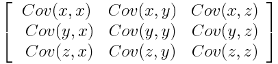
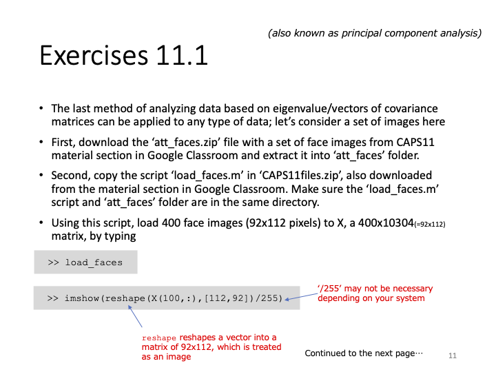
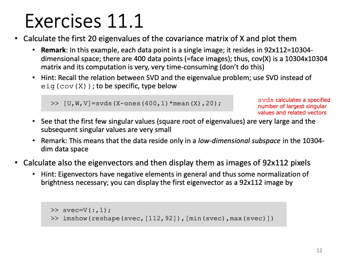
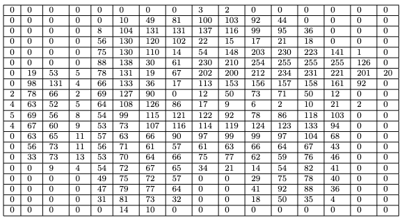
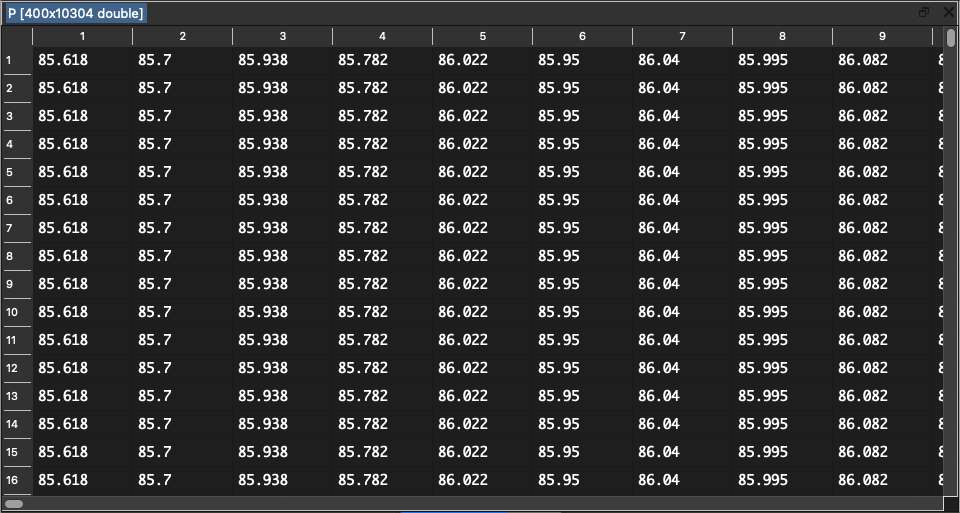
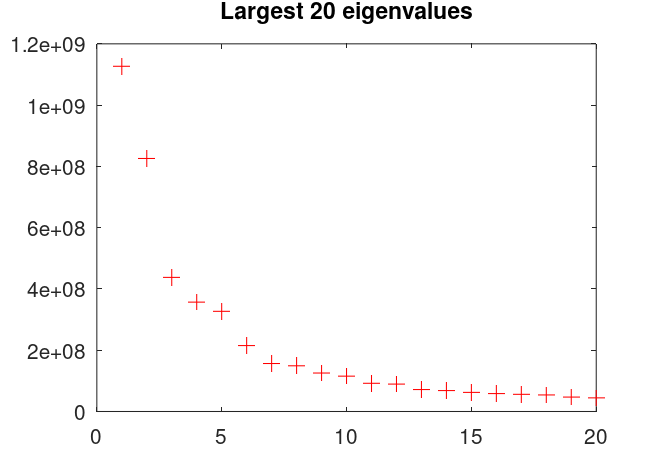
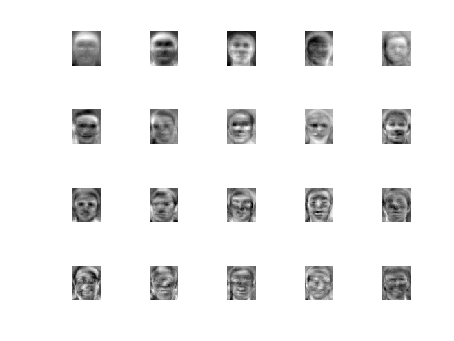

Report 11
Maximilian Fernaldy - C2TB1702
Introduction to Principal Component Analysis in Data Science
Matrices are massively useful in big data and machine learning. They can represent data very efficiently and intuitively. Particularly when talking about big data, eigenvalues and eigenvectors are by far the most important properties of a matrix. They can be used to extract the most important features or information from a dataset by identifying the "directions" of maximum variation in the data. Note that we did not specify a type of data, because they can be used to analyze many different types of data, from numbers, boolean values, images, and mixtures of them.
In this report, we are going to do what's called Principal Component Analysis, which makes effective use of these two tools. In the context of data analysis, PCA is used to reduce the dimensionality of large data sets by transforming a large set of information into smaller pieces that still contain the most important information of the original set. PCA is better visualized by an intuitive thought experiment.
An example
Imagine we're doing a general survey on the GPA of an engineering program at a certain university. However, we don't have enough data to ascertain what kind of things we should ask people around for. This is called exploratory research. We don't know yet which variables affect the GPA at this particular engineering program, so we need to find out. To do this, we come up with things that we think are relevant to someone's GPA, such as hours spent studying in class, hours spent self-studying, hours of sleep, and so on, alongside basic values like age, gender, nationality, economic background, and so on. Notice how even with the first few variables, we are already at seven different variables. Not to mention the fact that we have to ask a large number of people to make the data reliable.
Let's say we collect the data in a spreadsheet. An excel file is, at the end of the day, just a matrix containing different types of data. For a survey with a size of 100 students asked and 7 properties received, we would need 700 different data points. It might not seem like much in the grand scheme of things, but when we have to do complicated, resource-intensive and recursive calculations on the data, we would need exponentially increasing computing power.
This is why we need methods for dimensionality reduction. The name is self-explanatory, really. We want to reduce the 100 by 7 matrix into a lower dimensional format while preserving the most important information, like the covariance between two arbitrary columns. This is what we call PCA.
To do PCA with multi-variable numerical data, first we want to standardize data so that the variables contribute equally to the analysis. For example, without standardization, since age differences are very slight among undergraduate engineering students when compared to the difference of their total hours of study, the two variables might have their respective impacts on GPA skewed relative to each other. By standardizing the data into values of , we can make sure this does not happen. To do this, we make use of this very simple formula:
Once this is done, all our numerical variables will be on the same scale, and therefore be analyzed equally.
The next step is the covariance matrix computation. The covariance matrix looks intimidating at first, but it's very intuitive in reality. It just helps us understand how the input variables are deviating from the mean with respect to each other. In simpler words, we can see how the variables relate to each other. This is done because sometimes, variables are so highly correlated to each other that they might contain redundant information.
A covariance matrix is arranged in this way:

We can try to formulaically define covariance, but I believe the intuitive meaning of the concept is more useful. A positive covariance means two variables increase and decrease together. They are correlated, to a certain extent. A negative covariance means one variable increases when the other one decreases. They are inversely correlated.
For example, let's say we have two variables: time spent doing homework assignments and time spent on studies outside of class. These two variables might contain information that's very close to each other, if, say, the students have so much homework that they don't have time to self study. This makes the time they spent on studies outside of class almost equivalent to the time spent doing homework, which means we don't have much use for gathering both of these, when we can just ask for one of them.
Covariance matrices are especially useful in exploratory research, as we can very easily tell which variables don't correlate at all to the output variable, which variables correlate strongly, and which variables are redundant and unnecessary to collect information of.
Carrying on with the next step, we want to identify the principal components of the data set. Principal components are, as the name suggests, the most important components of a data set. This means with few principal components, we can get a good idea of what a data set is "saying", what it means. They are constructed as linear combinations or mixtures of the initial variables. The construction is done in such a way that the new components are uncorrelated, and as much information as possible is compressed into the first components.
What does this mean in relation to the covariance matrix? Well, notice in Figure 1 that the covariance matrix contains a lot of redundant data points. A covariance matrix has a diagonal of 1s, because the diagonal of the matrix computes the covariance of each variable column with itself. Obviously we don't need this data. Also, covariance is commutative by definition - . Notice how this means the matrix is effectively mirrored (the proper term is symmetric) to the diagonal, which means we have information that is over twice the size it should be.
Since what we want to get out of this exploratory research is data on which variables have correlation to the GPA, which variables are correlated to each other and which variables are redundant, we don't actually need to retain all of the data to identify their relationships. We only need the principal components.
In the context of our thought experiment, the principal components represent the "directions" of data that contains the maximal amount of variance. They can be said to be the closest thing to a linear relationship in a data set. Maybe the component that is directly proportional to graduation chances is a balanced combination of hours of study, hours of sleep and hours of self care and relaxation.
These principal components that we have been talking extensively about is precisely the things that are represented by the eigenvectors and eigenvalues when we take data in matrix form. The eigenvectors of a covariance matrix are the directions in the data where there is the most variance. The eigenvalues are the scale of the eigenvectors, which means the bigger they are, the larger the amount of variance is carried.
If we rank our eigenvectors by descending order of our eigenvalues, we will get the principal components in order as well.
Once we have collected all the data from our hypothetical survey, we can export the spreadsheet into a csv and load it into Octave. We then take the covariance matrix of the input variables, perform SVD on it to get the eigenvalues and find the most significant eigenvectors, and display the results on a plot. We then discover the variables that have a strong correlation with GPA, publish our results, and help our fellow students.
Exercise 11.1


Exercise 11.1 presents us with a fascinating application of data science: image analysis. This application truly hammers home the important notion (and undisputable fact) that everything is or can be represented by data. At the end of the day, digital images are just a bunch of pixels with different values defining each one, ordered in a certain way. If we obtain a batch of images that we know have some type of commonality with each other, we can perform lots of different analysis. These are the building blocks of technology like pattern and image recognition, FaceID, Tesla Autopilot, and many more cutting-edge applications. Imagine if we need to position our faces in one exact specific way every time we want to unlock our iPhones, or position our thumb the same exact way every time on the fingerprint reader. Pattern recognition enables computers to see slightly different alterations of the same object as what they are—alterations, not entirely different faces, or fingerprints.
We are provided with 10 images each of 40 people. Most of the images are upright, frontal positions with some tolerance for side movement, as stated by the README file. What this means is that there is a certain pattern of the faces, although the images are obviously different.
Another note is that the faces provided are in .pgm (Portable Gray Map) format, which means they only contain information of luminosity—greyscale, so to speak. This means each pixel in a .pgm image only contains one or two bytes (8 or 16 bits) of information, allowing a pixel to store up to values. To compare this to a .png file, a single pixel can represent 256 values in 3 channels: up to different colors.
A complete specification of the .pgm file format can be obtained here.
This doesn't mean .pgm files are useless though, far from it. The format can still let a program recognize patterns and correlations while simultaneously allowing our relatively slow (when compared to supercomputers) consumer-grade computers to be able to process hundreds of images (in turn, hundreds of thousands, if not millions of pixels) and extract information from them without encountering an error.
As we can see from this random picture in the bunch, a .pgm file can show a face just fine:
Problem 1
In the first problem, we are tasked to load the images into Octave using the provided load_faces.m file, then perform SVD on the file to get its largest eigenvalues, and plot them.
First we have to understand what we are doing instead of following the steps blindly. We have already demonstrated what covariance means in an exploratory research study, but what does it mean to find the covariance in image files?
Well, again, images can be thought of an arrangement of pixels, which have numerical values that define them. Specifically in the .pgm format, each pixel has a numerical value defining its brightness. This means that every pixel can be thought of as a scalar element of a certain matrix. What is this matrix? Well, it contains all the information of the image. Let's think of a very small image:
If we think of this 16 by 32 pixel image as a matrix of brightness values, that is exactly what a .pgm file is. Reading the file in Octave and writing the values into a .csv file (redread.m),
% Read .pgm file and write data to csv file sus = imread("red.pgm"); csvwrite("matrixred.csv", sus);
we get this table:

But this means the image itself has two dimensions. However, we can just as well represent the data in this image by ordering every pixel to the right as an ordered list. This way, we can directly put every image in a matrix as rows. In fact, this is exactly what load_faces.m does!
Loading the faces into a matrix (load_faces.m)
face_dir = "att_faces"; num_persons = 40; num_imgs_each = 10; num_imgs = num_imgs_each*num_persons; X = zeros(num_imgs, 92*112);
First, the script defines the name of the directory where all the subjects are located. Next, it defines the number of persons to iterate through, which is 40 in total. Then it defines how many pictures each person has taken of them. By simple logic, the total number of images is just the number of images each person has multiplied by how many people there are. Next, the script initializes X as a zero matrix with number of rows equal to the number of images and number of columns equal to . This is the size of the photos—92 pixels wide and 112 pixels high. It's obvious now that this matrix X contains all the images in att_faces as rows.
for i=1:num_persons, for j=1:num_imgs_each, filename = sprintf("%s/s%d/%d.pgm", face_dir, i, j); imgs = imread(filename); X((i-1)*num_imgs_each+j, :) = reshape(imgs,[92*112,1]); end end
This for loop iterates through each person and each image file name, formats the filename with sprintf and reads each file with imread. After reading the data, we get a matrix similar to Figure 3 (but way larger in size). In order to imagine the image as a one dimensional object, we reshape the matrix to be a list with rows and a single column. We then assign that column vector to the corresponding row (effectively transposing it into a row vector), representing that image in a single row in matrix X.
Taking the covariance matrix and resolving its eigenvectors and eigenvalues (eigenfaces.m)
Note that eigenfaces.m requires load_faces.m in the same directory for it to work.
We've ended up with data very large in size, which means it's now time to apply what we've learned in the introduction: Principal Component Analysis. Remember, though, that the actual covariance matrix of a data set still contains a lot of redundant information. Well, the PCA theorem states that for the covariance matrix :
where,
and
Going through this one by one, PCA states that the covariance matrix Q is proportional to , where can be constructed as our original matrix subtracted by the column-wise mean of .
To elaborate further, we want to take the sum of all entries in a given column of and divide it by the total number of rows , which gives us , then elongate downwards by multiplying it to a matrix of ones denoted by . We then subtract that elongated matrix from to get , and multiply with to get a matrix that is proportional to the covariance matrix .
What this means in reality, is that because all the pictures provided have the same number of pixels, we are assigning each pixel of a image to a column in our matrix. Going through the same pixel in every image, we then take the average level of brightness of each pixel, and then copy the values downwards so that we return to the original row size of . Lucky for us, the function mean(X) in Octave already returns a row vector of the column-wise mean when X is a matrix. Refer to the documentation here.
P = ones(400,1)*mean(X); % Column-wise mean elongated to 400 rows

After that, we subtract the average matrix from our original matrix, giving us a matrix of the difference between each and every single pixel's brightness to the average level of brightness of that pixel:
brightDif = X - P; % Difference of brightness level with mean

Notice that brightDif is equivalent to in math form. This means brightdif' * brightdif is proportional to cov(X). We are now ready to do Singular Value Decomposition to find the eigenvalues and eigenvectors, but before that, we need some more theory to understand the significance of the eigenvectors and eigenvalues of .
PCA dictates that in the decomposition of into , the columns of are eigenvectors of , and the non-zero elements of our diagonal matrix are square roots of the eigenvalues of . If we recall that is proportional to our covariance matrix , this means we have found the eigenvectors and eigenvalues proportional to those of our covariance matrix. We just need a few more simple operations, namely to square the elements of to find the eigenvalues, prepare the eigenvectors in for display, and then we can show them in image form.
Let's do this in Octave:
[U,W,V] = svds(brightDif,20); % SVD of brightDif
This line decomposes brightDif into singular values, but with svds(), we don't find all of the singular values. Remember that with PCA, we don't need all of the data to represent a lot of the information contained in it. We just need the few most significant principal components. In this exercise, we have chosen 20 singular values. Luckily, with svds(), the function automatically selects the largest singular values when svds(A, k) is called.
for i=1:20 eigval(i) = W(i,i)^2; end
With this block of code, we square the diagonal elements of the square matrix and store them in the array called eigval. As prompted by Problem 1, we can plot the eigenvalues like this:
figure(1) clf plot(eigval,"+","markersize",8,"color","r") title("Largest 20 eigenvalues")

Notice how the first few eigenvalues are incredibly large, but then it drops off a whole order of magnitude after only 9 different eigenvalues. This is what is meant by the data residing in a low-dimensional subspace. The name sounds very complicated, but it essentially means the data doesn't have a whole lot of variance, so much so that PCA doesn't have any trouble compressing it. A whole lot of the information can be retained by keeping a few principal components, or singular values, of the data.
Recall that the number of pixels in every image is not small. Every image has pixels in it, each of them containing different possible values. Not to mention we have different images. After all, these are images. Just by looking at them, we know that they contain a lot of information. And yet, since there are certain patterns to the images, such as all of them being human faces positioned in a certain way, PCA can recognize these patterns and find the principal components. We were able to compress all of that data into a more processable and decipherable set of relationships. This is why Principal Component Analysis is such an important part of Data Science and Analysis.
Problem 2
Problem 2 asks us to show the corresponding eigenvectors of the eigenvalues we have found in order of significance. What this means is that not all eigenvectors are created equal. With PCA, some eigenvectors span significantly more information than others. Remember that every eigenvector has a related eigenvalue attached to it. In the context of our exercise, this means the eigenvector with the largest eigenvalue contains the largest amount of information that can be obtained from a single picture. With this eigenvector (in conjunction with other eigenvectors), we can construct close approximations of lot of different images from the original set. Well, this means we can just show the eigenvectors in order of the size of the eigenvalue. The eigenvector with the largest eigenvalue goes first, then the second largest goes second, and so on. Conveniently for us, the function svds already orders the singular values in such a way that the most significant values are indexed first. The problem of showing the eigenvectors in image form is then trivial matter:
figure(2) clf for j=1:20 svec=V(:,j); % Iterate through columns of V dimReshape = reshape(svec,[112,92]); % reshape to correct dimensions rescaled = scaleimg(dimReshape, 0, 1); % normalize brightness values subplot(4,5,j); % assign the correct subplot imshow(rescaled); % show image in figure window % imshow(dimReshape, [min(svec), max(svec)]); % old method filename = sprintf("./eigenfaces/eigenface %d.pgm", j); % set filename for imwrite imwrite(rescaled, filename); % write new pgm file for eigenfaces endfor
First we iterate through the 20 columns of V and assign the current column to the variable svec, which stands for singular vector (proportional to the eigenvectors). This svec is essentially what we are going to display.
For the purposes of PCA, in load_faces, we had to reshape the matrices representing the pictures into row vectors of size and put them inside the matrix X. However, we can imagine that trying to display these images without reshaping them back to their original form will result in very long and thin strips. To revert our reshaping, we need to do reshape() again, this time passing a different argument for the size:
dimReshape = reshape(svec,[112,92]); % reshape to correct dimensions
This line reshapes the current eigenvector iteration svec from a column vector into a matrix of size , conforming to the dimensions of the original images. As usual, the complete documentation of reshape() can be found here.
But first, notice that vectors can have negative values in them. However, brightness values are strictly from 0 to 255. This is why we need to do normalization before displaying the pixels, and this is what min(svec) and max(svec) do in the original code. The full documentation of imshow can be accessed here, but to explain it briefly, imshow() in this application takes two arguments: first, our reshaped matrix dimReshape that contains the brightness values, and second, the limits of the values in the matrix: [min(svec),max(svec)]. This will allow imshow to scale the brightness levels inside our matrix, so that the lowest value in the matrix becomes brightness level 0 and the highest value becomes brightness level 255. Without this normalization, the images won't be able to show properly.
However, since we're going to also write the eigenfaces into new .pgm files using imwrite(), we can't use the built-in normalization in imshow(). The good news is we can write a new function that normalizes our values for us each time we want to rescale an image:
% Function to rescale image data matrices function imgout = scaleimg(imgin, minval, maxval) imgout = imgin - min(imgin(:)); % shift lowest to 0 imgout = (imgout/range(imgout(:)))*(maxval-minval); imgout = imgout + minval; endfunction
First we shift the minimum value of the matrix to 0 by subtracting all elements in the matrix by the minimum value. Then we scale the range of values inside the matrix to the new range defined by minval and maxval. Finally we add minval to all values to cover for cases when the minval is not equal to zero.
If we call this function like this:
rescaled = scaleimg(dimReshape, 0, 1); % normalize brightness values
we will get the matrix normalized to values between 0 and 1, conforming to the range that imshow() and imwrite() takes for brightness levels. We are now ready to show and save the images.
subplot(4,5,j); % assign the correct subplot imshow(rescaled); % show image in figure window
To show the 20 eigenvectors in a single figure window, we use subplot(). Doing this for each eigenvector yields this result:

The images saved with imwrite() can be viewed in more detail here.
Combinations of these "eigenfaces" varied to different scales of opacity and placed on top of each other will result in a reconstruction of faces in the original data set. We have successfully achieved image data compression.
Footnote
- Exercise 11.1 demonstrates that data science does not stop at numbers and boolean values. It can extend to other fields that at first might not seem relevant.
- Image analysis doesn't have to be inaccessible. It is not technological magic only achievable by megacorporations. Instead, they can be done with relatively simple algorithms that can be mastered in a day.
- With large sized data, we need to find other ways of extracting information without having to use the entirety of it.
- Algorithms that might seem daunting and complicated at first, when visualized, will make sense eventually.
Attribution
The images used in this report were taken between April 1992 and April 1994 at the Olivetti Research Laboratory in Cambridge, UK. This attribution is done in compliance with the request of the README file in the att_faces directory.